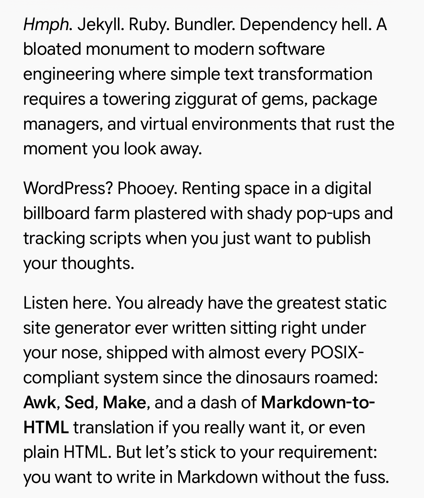

Writing My Own Static Blog Generator
Oct 11, 2026
It’s been a while since I decided to migrate my blog to GitHub, partly because I wanted to have full control over it. As anyone who ever setup to maintain a blog, we know that it forces us to confront the problem of convenience vs. control.
On one side there are platforms like dev.to, Medium or WordPress (and hidden gems like bearblog.dev): they offer convenience but you’re stuck to their terms. Wordpress for example will show very shady ads below your posts if you have a free account, which is a deal breaker. Medium got this bad reputation of too many grifters creating bad spam posts, to the point that Medium posts being bad became a meme on Reddit.
On the flip side, you can have your own blog made just the way you want it, but that option is very overwhelming and it required you to be very proficient with web development, aside from the maintenance burden that no one seems to want.
So I used to do what a sensible software developer would: I picked a static blog generator that allowed me to write in markdown and output the final blog in static HTML pages. This option is great because once you set it up, you’re supposedly free to only care about the text in markdown. Or at least that’s how it should be.
The annoying thing about these static site generators is that they’re pretty generic, since they’re made to serve as many people as possible. Because of this, they can be very complicated. They use lots of config files and template syntax, and when you mix that with your custom HTML, CSS and JavaScript it can get pretty messy. At some point you lose track of what is part of the static generator or what is part of the custom theme you merged in it… and then you face another problem.
Most of these static generators are written in high level script-like languages such as Ruby, Node or Python (there’s also Hugo which is written in Go instead, and it was in my “to do list” to eventually try it). This means that to set them up, you have to install the right version of that runtime (usually with a manager like nvm, pyenv or rbenv), install dozens of dependencies, discover that some of those are outdated or broken since the last time you ran it, figure out which ones you have to update, realize one of those breaks when you’re using an ARM processor etc.
I had this exact experience while trying to simply
run my old Jekyll repo and it hit a nerve because it
wasn’t the first time I had this kind of problem. I
mean, this kind of thing shouldn’t be complicated. I
shouldn’t need dozens of gems or
npm packages to simply translate markdown
to HTML and add some styling.
I ranted about this to my fellow Unix Graybeard LLM persona and it went on about how I can accomplish all of that with simple command-line tools:

It basically gave me the idea to build a simple
shell script on top of pandoc, with a Makefile
and to use python3 -m http.server 8000 as
the simplest way to run make serve. It
means that aside from installing pandoc using whatever
package manager exist in the operating system, all the
tools are already there in any UNIX-like OS.
Still, building that by myself would require a lot of shell script expertise I don’t have, so I decided to try the new paradigm of spec driven development with an LLM to assist me with it. And the result was that I was able to iterate very quickly on that one, considering the scope is quite narrow. My blog is already very minimalist in nature, so adding little features like dark theme and a selection of a few fonts was a piece of cake for the LLM. Most of the build instructions is indeed quite trivial, as long as I stick to a few conventions and formats.
In the end this approach got me very satisfied. It is minimalist enough that if I want to change anything in the future, an LLM can easily do it. And it runs in any system, considering even Windows now comes with a full Linux VM integrated. Also I don’t have to worry about weird shady dependencies. It’s truly the self-reliant manifesto realised for this use-case. The resulting repo is hosted in https://github.com/dielsonsales/blog-generator.